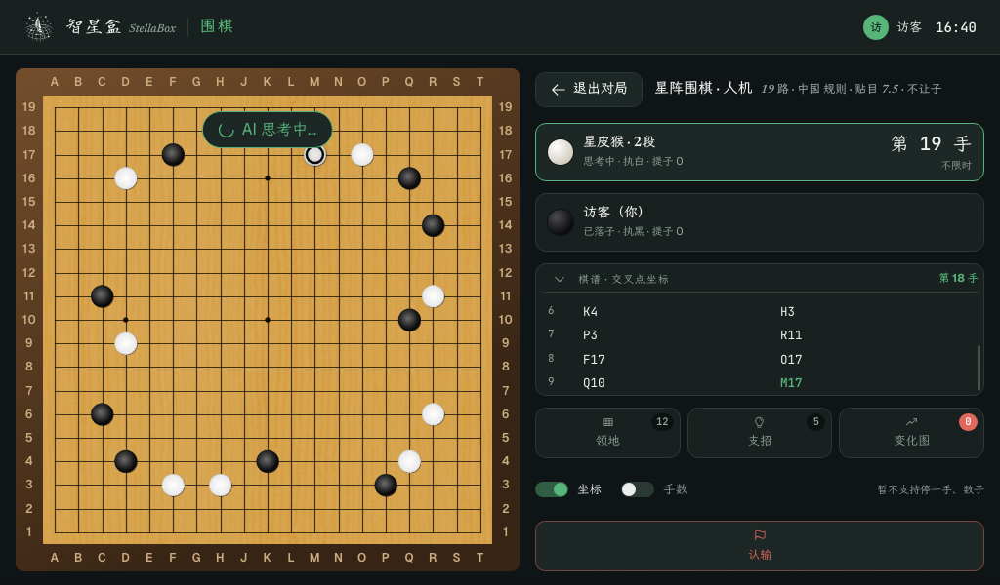

星阵对局 · 异常与数子反馈
1024×600 目标屏幕 · 基于现有对局截图的交互设计预览
预览数据为示意；按钮不调用设备或星阵

提示卡片浮在右栏中部；原有信息和按钮仍可见，但右栏变暗且不能点击。左侧棋盘不遮挡。紫圈和紫灯使用同一种位置语义。
1024×600 目标屏幕 · 基于现有对局截图的交互设计预览
预览数据为示意；按钮不调用设备或星阵

提示卡片浮在右栏中部；原有信息和按钮仍可见，但右栏变暗且不能点击。左侧棋盘不遮挡。紫圈和紫灯使用同一种位置语义。